Ambry LinkedIn 对象存储 论文翻译
文章目录
原文由邹扒皮翻译，已刊于 邹扒皮实验室。本来是打算两个人校对后发布，但是本人校对太慢，相隔 13 天后终于完成，对方已经不接受 PR，又不忍心一腔热血全部白费，所以放在这里。
原文 Ambry: LinkedIn’s Scalable Geo-Distributed Object Store 发表于 SIGMOD 16
项目目前已经开源托管在 github
摘要
全世界社交网络之下的基础设施，需要为数十亿的大小可变的媒体对象提供不间断的服务，例如照片，视频和音频切片。这些对象必定被存储在一个低延时高吞吐的系统中。这个系统需要支持跨地区、可扩展，并提供负载均衡能力。当存储大文件的时候，现有的文件系统和对象存储面临着一些挑战。我们推出 Ambry，一个针对大规模不可变对象（称之为blob）的生产级系统。Ambry 设计为一个分布式的系统，并且使用了如下技术：逻辑 blob 组，异步复制，再均衡机制（译注：数据再均衡），zero-cost 失败检测机制和系统缓存。Ambry 已经在 LinkedIn 生产环境中运行了 2 年，以高达 1万次请求/s 的质量，为超过 4 亿用户提供服务。我们的实验显示，Ambry 提供了一个高效（使用了 88% 的带宽），低延时（1MB 文件延时小于 50ms），负载均衡（相对于未进行负载均衡提高了 8-10 倍性能）的系统。
关键词
对象存储，跨地区分布，可扩展，负载均衡
1. 介绍
在过去的十年中，社交网络已经变成了全世界最受欢迎的社交方式，数亿的用户不间断的上传和阅读数十亿不同类型，从照片和视频到文档，这些我们称为 blob 的大尺寸媒体对象，上传一次，随后被全世界各地频繁的访问，从不改变、很少删除。LinkedIn 作为一个全球性的大规模社交网络公司，急需一个可伸缩、高效的跨地区分布系统来存储和召回这些基本只读 (read-heavy) 的 blob。
处理 blob 对象会面临许多独一无二的挑战。第一，由于媒体文件的多样性，blob 的大小变化非常剧烈，从数十 KB（例如头像图片）到几 GB（例如视频）。系统需要同时支持高效地存储超大文件和海量的小文件。第二，需要存储和服务的 blob 数量在不断增长。到目前为止，LinkedIn 每天为超过 80 亿的 put/get （总数据量超过 120TB)）操作提供服务。过去的 12 个月中，从 5000 请求/s 上升到 9500 请求/s，请求的频率增长几乎翻倍。请求频率的迅速增长，更加加剧了对可线性扩展系统（并且需要低开销）的需求。第三，负载变化和当集群扩容时可能造成负载不均，造成系统延时和吞吐下降。这导致了对负载均衡的需求。最后，用户希望上传的过程很快，能够持久化，并且高可用。当用户上传了一个 blob，即使是当一部分内部的基础设施失效的时候，ta 所有的朋友能够从全世界任何地方，以一个很低的延时看到 ta 上传的 blob。为了提供这些功能，数据必须能够可靠的复制到全球的多个数据中心，同时为每个请求提供低延时的服务。
LinkedIn 曾经有一套自研的解决方案，称为 Media Server，由 NAS（用于存储文件），Oracle 数据库（用于存储 metadata）和运行了 Solaris 系统的机器构成。Media Server 有着许多缺点。因为许多小文件的存在，造成了海量的元数据操作，该系统面临着 CPU 和 IO 的限制，而且还不能水平扩展、非常昂贵。考虑到 LinkedIn 扩张的非常迅速，并且未来的网页将会以媒体文件为主，我们需要找到一个代替方案。
已经有一些系统被设计用来处理大量的数据，但是没有一个能够完全满足 LinkedIn 所需要的规模和需求。已经有对分布式系统 [10, 16, 22, 24, 28] 的广泛研究。比如在 [3, 11] 中指出，当存储 blob 时，这些系统有着一些限制。例如，层级目录和丰富的元数据，对于 blob 存储是多余的，增加了许多不必要的开销。
也有许多 kv 存储 [2, 5, 8, 14] 被设计用来存储大量的对象。尽管这些系统能够处理许多小的对象，但他们没有针对大对象进行优化（数十 MB 到数 GB )。此外，这些系统为了提供一致性保障，增加了额外的开销。然而这种保障对于不可变数据来说一般是多余的。所需的开销举例来说有：使用向量时钟，冲突解决机制，日志和中间协调者。
已经有一些专门设计的系统用来存储大量不可变对象，包括 facebook 的 haystack 3，以及继任者 f4 [18] 和 Twitter 的 Blob Store [27]。然而这些系统没有解决负载不均的问题，这个问题在集群扩容的时候尤其严重。
在这篇文章中， 我们将介绍 Ambry，一个被设计用来处理海量 blob 的生产级系统，blob 具有这些特性：尺寸不定、可大可小，一次写多次读（读流量大于 95%）。Ambry 的设计主要考虑到如下四个目标：
1) 低延时、高吞吐：系统每秒都需要及时处理大量的请求，并且运行在廉价的通用硬件上（例如机械盘）。为了达到这个目的，Ambry 使用了许多技术：利用系统缓存，当数据从硬盘发送到网络时使用 zero copy，分块 (chunk) 数据可以使用多个节点并行存储和召回，读写 replica 数量的策略可配置，zero-cost 失败探测机制。（详见 2.3, 4.2, 4.3 章节）
2) 跨地区操作： 为了实现即使出现故障也可用和持久化，Blob 必须复制到地理上分布不同的多个数据中心。为了在跨数据中心的环境中，实现低延时、高吞吐，Ambry 设计为分布式(decentralized) 的多主系统，数据可以由任何一个 replica 读或写。此外它还使用了异步写：异步写入数据到最近的数据中心，异步复制数据到其他数据中心。同时为了高可用，使用 proxy 机制：当数据还没有复制到当前的数据中心时，会将请求转发到其他的数据中心。（详见 2.3, 4.2 章节）
3) 可扩展性：随着日益增长的数据量，系统必须拥有横向扩展能力，同时开销（译注:系统扩展开销）要低。为了实现这个目标，Ambry 主要做了三个设计方面的权衡，第一，Ambry 将 blob 的逻辑存储与物理存储分离，允许更改物理位置时对逻辑位置透明。第二，Ambry 设计为完全分布式系统，没有 manager/master。第三，为了索引 blob 时的可扩展性和效率，Ambry 使用了带有布隆过滤的分段索引，索引维护在硬盘中，最新的索引缓存在内存中。（详见 4.3 章节）
4) 负载均衡：尽管数据在增长，但是系统仍然需要保持平衡。在静态集群中 Ambry 通过将大 blob 分块并随机选择存储的方式保证数据平衡。再均衡 (re-balancing) 机制则保证当集群扩容后会恢复到均衡状态。（详见 3 章节）
Ambry 已经在生产环境中成功的运行 24 个月，跨 4 个数据中心，服务超过 4 亿用户。我们的实验结果显示，Ambry 已经达到高吞吐（接近网络带宽的 88%）和低延时 (50ms 内处理完成 1MB 的 blob) 的目标，高效运行在多个跨地区的数据中心，并在尽可能少移动数据的前提下，解决数据不均的问题，将效率提高了约 8-10 倍。
2. 系统概览
在这个章节我们讨论了 Ambry 的总体设计，包含系统的高层架构（详见 2.1 章节），partition 的概念（详见 2.2 章节）和支持的操作（详见 2.3 章节）。
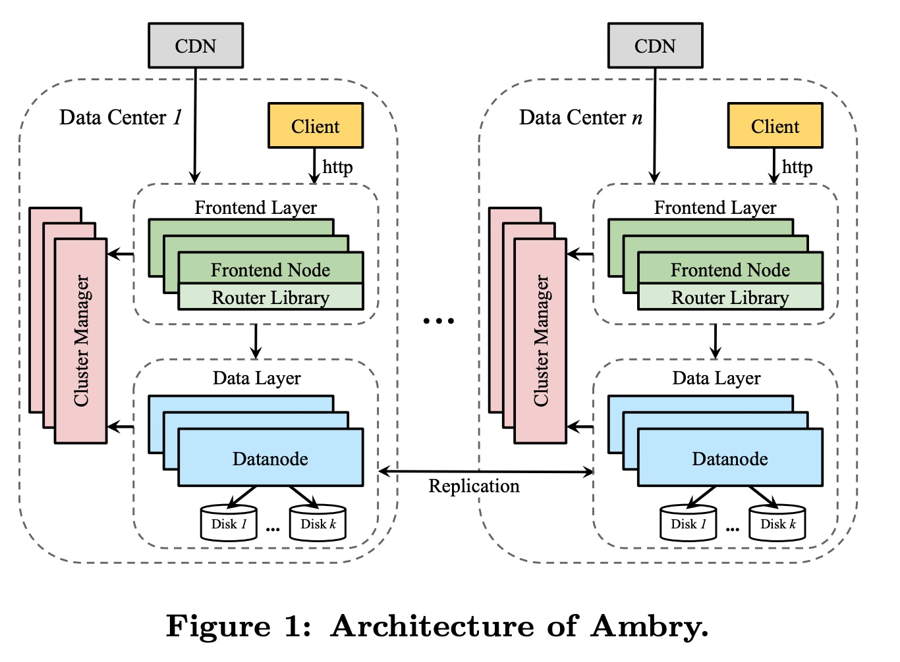
2.1 架构
Ambry 设计为全分布式的系统，可以部署在跨地区的数据中心。整体的架构展示在了 Figure 1. 中。系统主要由三部分组成：Frontends 用来接收和路由请求， Datanodes 存储真实数据， Cluster Managers 维护集群状态信息。每个数据中心拥有自己的一套组件，并且分布式的运行。Frontends 节点与 Datanodes 节点之间是完全独立的。Cluster Managers 之间是同步的，同步通过 ZooKeeper [12] 实现。我们下边提供各组件的概览（详细的介绍在 4 章）。
Cluster Manager: Ambry 将数据以称为 partition（详见 2.2 章节）的虚拟单元组织起来。一个 partition 是由若干 blob 组成的逻辑分组，使用大的 replicated 文件实现。刚创建时，partition 是可读可写的。即，可以读不可变 blob 或者添加新 blob。当一个逻辑 partition 容量快满时，转变为只读状态。Cluster Manager 会持续跟踪每个 partition replica 的状态（读写/只读)）和位置，以及集群的物理布局（节点和磁盘位置）。
Frontend: 在多租户环境中 Frontends 负责接收和路由请求。系统处理三种类型的请求：put, get, delete。 热数据会由 Ambry 层之上的 CDN(Content Delivery Network) 处理。Frontends 接收从客户端直接发送或由 CDN 转发（如果数据被缓存）的请求。Frontends 转发请求到相应的 Datanode(s) 并且返回相应的数据给发起请求的客户端或 CDN。
Datanode: Datanode 存储和召回真实的数据。每个 Datanode 管理一组磁盘。为了获得更好的性能，Datanode 维护了许多额外的数据结构，包括：blob 索引，journals 和布隆过滤器（详见 4.3章节）。
2.2 Partition
Ambry 将 blob 随机地分组到称为 partitions 的虚拟的单元中，而不是像 Chord [26] 和 CRUSH [29] 那样直接将 blob 映射到物理机。partition 在物理机上的安置由独立的程序处理。这将逻辑位置和物理位置进行了解耦，将数据迁移透明化（数据再均衡所必须）同时可以避免集群扩展时立即执行再哈希 (rehashing)。
partition 是使用预分配的 append-only 的大日志文件实现的。目前，partition 在系统运行期间的大小是固定的1，因此 partition 的大小需要足够大使得 partition 的额外开销显得微不足道，额外开销是指为每个 partition 维护的额外数据结构，像索引、 journal 和布隆过滤器 (详见 4.3 章节)。另一方面，故障恢复和重建的应该足够迅速。在我们的集群中使用 100GB 的 partition。因为重建可以从多个 replica 中并行进行，我们发现即使是 100GB 大小的 partition 也可以在几分钟内重建完毕。
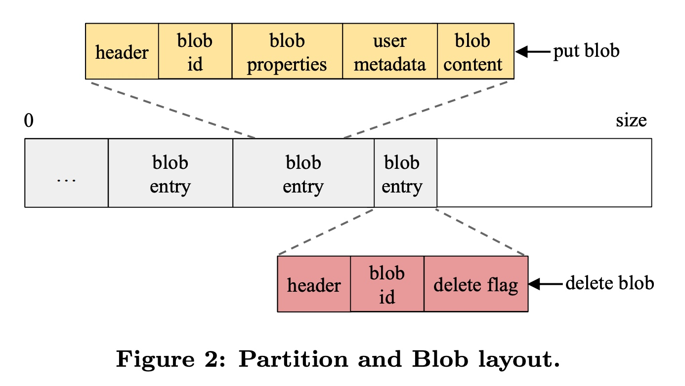
Blob 是以 put entry 或 delete entry 的形式顺序写入到 partition 中的 (Figure 2)。这两种 entry 都包含一个 header （存储 entry 中各个 field 的偏移量）和一个 blob id。 blob id 是唯一标识，由 Frontend 在 put 操作时生成。用于在 get/delete 操作时定位 blob。这个 id 包含存放了 blob 信息的 partition 的 id (8 Bytes)，后面接着是 32 Bytes 的 blob 的 UUID。blob id 虽然可能冲突，但是概率非常低(< $2^{-320}$)。只有两个 put 操作生成同样的 id 并且写到同一个 partition 时冲突才会发生。冲突会在 Datanodes 中解决，将后 put 的返回失败即可。
Put entry 也包含了预定义的属性，包括 blob size， ttl(time-to-live)，创建时间，content type。同时也支持用户自定义属性。
为了提供高可用性和故障容错，每个 partition 被复制到多个 Datanodes 中。每个 replica 使用对磁盘空间贪心的算法选择安置磁盘。这个算法选择未使用空间最大的磁盘，同时要遵守如下限制条件：1) 每个 Datanode 不能安置超过一个（译注：相同 partition 的）replica。2) replica 需要存在于多个数据中心。目前每个 partition 的 replica 数量由系统管理员配置。未来一部分的工作是，根据 partition 的热度自动调整 replica 数量，对于冷的数据使用纠删码进一步减少副本数量。
刚创建时，partition 可读可写，能处理所有的操作 (put, get, delete)。当 partition 大小到达阈值时（容量阈值），会变为只读的，此后只处理 get 和 delete 请求。
容量阈值应该比最大容量稍小(80%~90%)，主要有两个原因。第一，在变为只读之后，replica 可能还没有完全的同步 （因为写是异步的），需要空闲的空间去追赶落后的部分。第二，删除请求仍然需要添加 delete entry。
Delete 与 put 操作类似，只不过 delete 作用于已经存在的 blob 上。默认的情况下，删除的结果是为删除的 blob 添加 delete 的 entry （带有 delete 标记，软删除）。系统会使用 in-placed 的 compaction 机制周期性的清理删除的 blob 。在 compaction 之后，只读的 partition 如果被释放了足够的空闲空间，则会转变为可读可写的。由于 delete 和 put 的相似性，文章的剩余部分主要关注 put。
2.3 操作
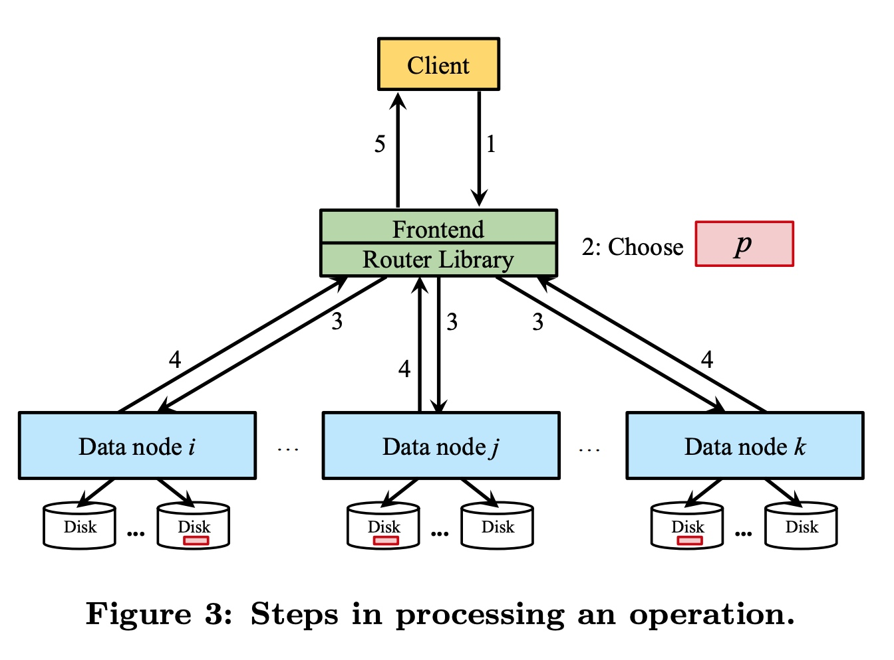
Ambry 拥有轻量级的 API，仅支持三个操作：put, get, delete。API请求的处理过程在 Figure 3 中进行了展示。当收到请求时，Frontend 有选择的对请求进行一些安全检查，使用 Router库（包含了最核心的处理逻辑） 选择一个 partition，与 partition 所在的 Datanode 进行通信，处理请求。在 put 操作中，partition 是随机选择的（主要目的是为了数据的均衡），而在 get/delete 操作中，partition 是从 blob id 中获取的。
由于多 master 的设计，操作可能由任何一个 replica 处理。具体要与多少 replica 进行通信是由用户策略定义的。这些策略类似于 Cassandra [14] 中的一致性级别，用来控制一个操作需要多少个 (1 个, k 个, 大多数，所有) replica 参与。对于 put（或者 delete ) ，请求会转发到所有的 replica，策略（为了权衡持久性和延时）定义了返回成功所需要的 replica 确认 (写入) 的数量。对于 get 请求，策略（为了权衡负载和延时）定义了需要随机选择多少个 replica 进行通讯，实践中我们发现对于所有的操作，k=2 时的策略能够获得我们所期望的平衡点（译注：负载，延时，持久性的平衡）。更严格的策略（涉及更多 replica 的参与）将会提供更强的一致性保障。
此外，在跨数据中心的场景下，以同步方式写所有的 replica，将会影响延时和吞吐。为了能够缓解这个问题，Ambry 使用异步方式执行写操作，put 操作只同步写本地数据中心，这里的本地数据中心是指接收请求的 Frontend 所在的数据中心，本地处理完成后这个请求就认为已经成功了。然后，Ambry 会使用一个轻量级的复制算法，将 blob 复制到其他的数据中心。（详见 5 章节）
为了提供 read-after-write（写完后立刻可读）一致性，即从一个尚未复制到 blob 的数据中心能够读取到数据（数据中心 A 写在数据中心 B 读），Ambry 使用了代理请求的方式。如果 Frontend 不能从本地数据中心召回 blob，则会将请求代理到另外一个数据中心，将那边的结果返回。尽管代理请求开销很大，但是我们在实践当中发现代理请求发生的频率很低（小于 0.001%）。
3. 负载均衡
负载倾斜、大量的大 blob 和集群扩容造成了负载不均，并且对系统的延时和吞吐造成了影响。Ambry 在动态（扩容）和静态集群中都实现了负载均衡功能（包括磁盘使用率和请求速率）。
Static Cluster：将大的 blob 分割为多个小的块（详见 4.2.1 章节），以及通过 Router 库随机选择一个 parition 执行 put 操作，来实现 partition 大小的负载均衡。此外，使用超大的 partion 及依赖 CDN 处理非常热门的内容显著降低了产生热点 partition 的可能性。使用这些技术后，生产环境的所有 Datanodes 中，负载不均的请求和大小不均的 partition 只占 5%。
Dynamic Cluster：在实践中，可读可写 partition 接收了所有的写流量，同时（由于数据热度）承担了主要的读流量。因为 partition 是以一种半平衡 (semibalanced) 的方式增长的。可读可写partition 的数量成为了负载不均的主要因素。在集群扩展之后，新的 Datanode 只包含可读可写的 partition，老的 Datanode 包含了绝大部分只读的 partition。这种可读可写 partition 的倾斜分布造成了系统的负载不均。在我们起初的版本中，新的 Datanode 处理的请求比老的高 100 倍，比平均 (average-aged ones) 的高 10 倍。
为了缓和这个问题，Ambry 引入了再均衡机制：移动最少的数据使集群回到（针对磁盘使用率和请求而言的）半平衡（semi-balanced）状态。再均衡机分别将请求比例和硬盘使用率的不均降低了 6-10 倍和 9 -10 倍。
Ambry 定义了 ideal 状态（已经负载均衡的状态）的三元组 (idealRW, idealRO, idealUsed)，idealRW 代表可读可写 partition 的理想数量，ideaRO 代表只读 partition 的理想数量，idealUsed 代表每块磁盘的理想使用率。可以分别由可读可写 partition 的数量/只读 partition 的数量 /硬盘使用的总空间除以集群中硬盘的总数得到。通过比较当前磁盘与 idealRW/idealRO/idealUsed 的值，来判断高于（或低于）ideal 状态。
再均衡机制尝试到达 ideal 状态，通过分两阶段将高于 ideal 状态磁盘的 partition 移动到低于 ideal 状态的磁盘来实现。下面给出伪代码实现：
|
|
Algorithm 1 Rebalancing Algorithm
阶段1 - 移动到 partitionPool：在这个阶段，Ambry 将高于 ideal 状态磁盘的 partition 移动到一个池子里，这个池子称为 partitionPool (6-13行)，这个阶段的结尾，不会有磁盘高于 ideal 状态，除非删除 partition 会造成磁盘低于 ideal 状态。
Ambry 从（最主要的影响因素）可读可写 partition 开始，只以 idealRW 作为基准，移动超出数量的 partition。只读 partition 的移动也使用类似的过程，不过同时考虑了 ideaRO 和 idealUsed 两个指标。 选择移动哪个 partition 的策略是基于移动最小数据量确定的。对于可读可写 partition，选择容量使用最小的 partition。而对于只读 partition 随机选择即可，因为所有的只读 partition 都是写满了的。
阶段2 - 安置 partition 到磁盘：在这个阶段，Ambry 按照先可读可写 partition 后只读 partition 的顺序将 partition 从 partitionPool 安置到低于 ideal 状态的磁盘 (14-16 行) 。partition 安置采用了随机 round-robin 的方式 (17-22 行)。Ambry 找出所有在 ideal 之下的磁盘并将他们打乱，然后使用 round-robin 的方式将 partition 安置到他们上面，重复这个过程直到 partitionPool 为空。
在找到新的安置处后，replica 会进行无缝迁移：1) 在目的地创建新的replica 。2) 通过同步协议新的 replica 与旧 replica 进行同步，在同步过程中，新旧 replica 都提供写服务。3) 当同步完成后删除旧的 replica。
4. 组件详解
在这部分我们将更详细的讨论 Ambry 的主要组件。我们将描述 Cluster Manager 存储状态的细节（ 4.1 章节），Frontends 执行的包括分块和失败检测在内的额外职责（4.2 章节），Datanodes 维护的冗余数据结构 (additional structures)（4.3 章节）。
4.1 Cluster Manager
Cluster Manager 负责维护集群的状态，每个数据中心有本地的 Cluster Manager 实例，使用 ZooKeeper 与其他实例保持同步。Cluster Manager 存储的状态数据非常小（总和小于几 MB），由硬件布局和逻辑布局组成。
4.1.1 硬件布局
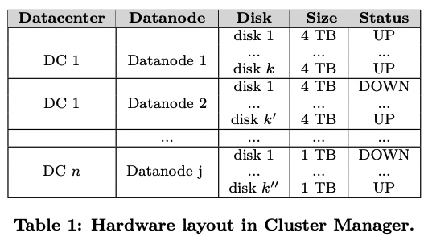
硬件布局包含了集群的物理结构信息，即数据中心、Datanodes 和磁盘的分布。同样也为每个磁盘维护了原始容量和状态，健康 (UP) 或者故障 (DOWN)。Table 1 是一个硬件布局的例子，如表所示，Ambry 工作在一个异构的环境中，在同一个数据中心内部或跨数据中心，使用着不同的硬件和不同的配置。
4.1.2逻辑布局
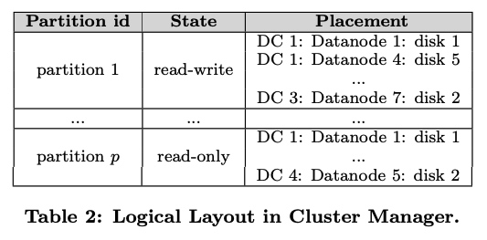
逻辑布局维护了 partition 备份的物理位置，以及每个 partition 的状态（可读可写/只读）。为了得到 partition 的状态，manager 周期性地与 Datanode 进行通信，请求他们的 partition 状态。逻辑布局用于选择安置新创建 blob (put 操作) 的 partition，定位给定 replica 所在的 Datanode (所有操作)。逻辑布局示例如 Table 2 所示，partition 的 replica 可以被安置在一个或多个数据中心的多个 Datanode。此外一块硬盘 (例如 DC 1: Datanode 1: disk 1) 可以存储不同 partition 的 replica，这些 replica 可以是只读的，也可以是可读可写。添加 partition 是通过更新存储在 Cluster Manager 实例上的逻辑布局实现的2。
4.2 Frontend 层
Frontend 是外部请求进入 Ambry 的入口点，每个数据中心都拥有一组自己的 Frontend。Frontend 是无状态、没有 master 或者互相合作的完全分布式的，完全一样地执行相同的任务，所有的状态都存储在 Cluster Manager 中（frontend 会周期性的拉取状态）。这种设计使得 Frontend 能够获得扩展能力（可以在没有太多性能损耗的情况下加入新的 Frontend），故障容忍能力（请求可以被转发到任意一个 Frontend）和故障恢复能力（可以很快地替换故障的 frontend）。Frontend 主要有三个职责：
- 请求处理：包括接收请求，使用 Router 库（详见 4.2.1 章节）将他们路由到相应的 datanode(s)。并且返回 response。
- 安全检查：可以选择性的执行检查，例如病毒扫描和请求认证。
- 捕获操作：推送事件到 Ambry 之外的变更捕获系统来做进一步的离线分析，比如发现系统的请求模式。我们使用 Kafka 作为变更捕获系统，由于它提供了高持久性、高吞吐和低开销的能力。
4.2.1 Router 库
Router 库包括处理请求和与 datanode 通信的所有核心逻辑。Frontend 只是嵌入并使用了这个库。客户端可以通过嵌入这个库绕开(bypass) frontend 直接处理请求。这个库包括了四个主要程序。1)策略路由， 2) 大 blob 分块， 3) 失败检测，4) 代理请求。
策略路由：当接收到一个请求，该库会决定选择哪个 partition ( put 操作时随机选择，get/delete 操作从 blob id 中提取 partition )。然后基于用户选定的策略（章节 3.2 中讨论的 {one, k, majority, all}）与相应的 replica 进行通讯，直到请求成功或失败。
分块：非常大的 blob（例如视频）会造成负载不均，阻塞小块的 blob，天生具有高延时的特性。为了减缓这些问题，Ambry 将大的 blob 分为大小相等的单元，称之为分块 (chunk)，大的分块不能完全解决大 blob 带来的挑战，小的分块将会带来过多的额外开销。基于我们目前的大 blob 分布，我们发现最有效的分块大小是 4-8MB3。

在 put 操作期间，blob b 被分为 k 块 ${c_1,c_2,c_3….c_k}$，每个分块被当做一个独立的 blob，和普通的 blob 一样经过相同的步骤执行 put 操作（详见 2.3 章节），大概率会被分散到不同的 partition，分配得到唯一的与 blob id 格式相同的分块 id。为了为了能够召回 blob b，Ambry 为 blob b 创建了元数据 (metadata) blob $b_{metadata}$，$b_{metadata}$ 存储了分块的数量和顺序排列的分块 id。如 Figure 4 所示。然后将这个元数据 blob 作为普通的 blob，put 到 Ambry 中，返回 $b_{metadata}$ 的 blob id 作为 b 的 blob id。如果 put 操作在写完所有分块之前失败，那么系统会将已写入的分块标记为删除(issue deletes)，这个 put 操作则必须重做。
在 get 操作期间，会先召回元数据 blob 并从中提取分块 id。然后 Ambry 使用大小为 s 的滑动缓冲区召回 blob。Ambry 并行地（因为分块基本都写在不同的 partition 中，partition 又分别存储在不同的 Datanode 中）查找 blob 前 s 个分块。当滑动缓冲区的第一个分块被召回了，Ambry 就会将缓冲区滑动到下一个分块，如此往复。只要第一个分块被召回， 整个 blob 就开始返回。
尽管在这种分块机制下需要额外的 put/get（由 metadata blob 造成），但总的来说，我们改善了延时，因为多个分块的写和召回都是并行的。
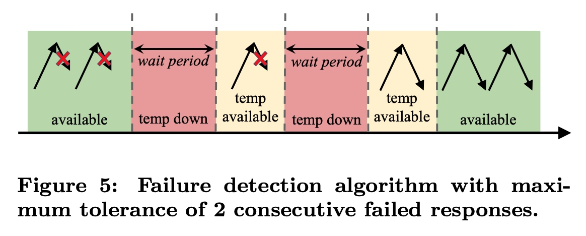
**Zero-cost 故障检测: **在大型系统中故障频繁的发生。从无响应、连接超时到磁盘 I/O 问题不一而足。因此 Ambry 需要一个故障检测机制来发现不可用的 Datanodes/磁盘并避免将请求发给它们。
Ambry 没有像心跳或者 ping 那样使用额外的请求消息，而是采用 zero-cost 的失败检测。在实践中发现我们的检测机制简单、有效而且消耗很少的带宽。这个机制如 Figure 5 所示。在这种方法中，Ambry 记录上一个 check_period 中特定 Datanode( 或磁盘) 上的请求连续失败的次数。如果失败的数量达到了 MAX_FAIL 的阈值（在我们的例子中设置为 2），Datanode 将标记为临时下线一段时间，队列中要发送给这种状态的 Datanode 的所有请求最终都会超时，并且需要用户重试。在 wait_period 过去之后，Datanode 会转变为临时可用状态，当 Datanode 处于临时可用的状态，如果收到的请求失败了，就会再次转为临时下线状，否则就会被标记为可用，再次恢复到正常工作状态。
代理请求： 如 2.3 章节描述的，Ambry 使用代理请求来实现高可用和远程数据中心的 read-after-write 一致性。当一个 blob 还未复制到本地的数据中心时，对这个 blob 的请求将会被转发到其他的数据中心，并且在那里得到处理（代理请求）。然而，数据中心的 partition 可能由于，尚未复制数据造成不可用，直到 partition 追回数据并且恢复 replica 时。
代理请求是由 Router 库处理，对于发起请求对用户请求透明。实践中我们发现代理请求发生的比例小于 0.001%，因此对用户体验的影响很小。
4.3 Datanode层
Datanode 负责维护真实的数据，每个 Datanode 负责管理一部分硬盘，响应发往位于这些硬盘上的 partition replica 的请求。Put 请求通过向 partition 文件末尾追加写的方式处理。Get 请求可能需要花费更多的时间，其中最重要的原因是 blob 在 partition 中的位置未知。为了最小化读写的延时，Datanode 使用了一些技术：
- 索引 blob： Ambry 为每个 partition 的 replica 存储了 blob 偏移量的索引，用来减少线性扫描查找 blob 的时间。（详见 4.3.1 章节）
- 利用系统缓存：Ambry 通过限制其他组件的内存使用率，使得大部分读请求可以从内存中获得数据，达到利用系统缓存的目的。（详见 4.3.2 章节）
- 单次 seek、批量写：对于某个 partition，Ambry 会将相关的写操作安排为一组进行批量写入，并且周期性地将写操作 flush 到磁盘。因此，对于批量的连续写最多引发一次磁盘 seek。flush 的周期是可配置的，取决于请求延时和一致性的权衡。尽管批量会引入额外开销，如 flushing, dirty buffer 和 tunning，但是收益大于这些开销。
- 所有 fd 保持为打开状态：由于 partition 一般都非常大（我们设置为 100GB），Datanode上安置的 partition replica 数量就比较少（数百个），因此 Ambry 一直保持 fd 为打开状态。
- zero copy gets：当读取一个 blob 时，Ambry 利用了 zero copy [25] 机制，即内核直接从磁盘拷贝数据到网络缓冲区而不经过程序，这个是可行的，因为 Datanode 在 get 操作中不会对数据进行任何操作。
4.3.1 索引
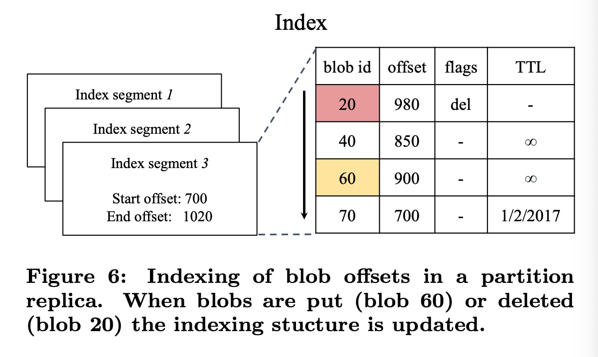
为了以低延时找到 blob 在 partition replica 中的位置，Datanode 为每个 replica 维护了一个轻量级的内存索引，如 Figure 6 所示。索引根据 blob id 进行排序，并将 blob id 映射到 blob 实体的起始偏移量。当 blob 被 put (如 blob 60) 或者 delete (blob 20) 时，索引是实时更新的。
与 SStables [5] 类似，Ambry 限制索引大小的方式是，将索引分段，老的分段存放在磁盘中，并为每个磁盘上的分段维护一个布隆过滤器。（详见 4.3.2 章节）
索引另外也存储了标记 blob 是否已经被删除的标识位，和一个 time-to-live(TTL) 位，在 get 操作期间如果发现 blob 已经过期或者被删除，就会直接返回错误而不需要读取真实数据。
注意索引文件不包含任何影响正确性的额外信息，而只是为了提高性能，如果一个 Datanode 故障了，整个索引能够通过 partition 进行重建。
4.3.2 充分利用系统缓存
最近写入通常也是最热门的数据，会被自动的缓存而不需要任何额外的开销（由操作系统完成）。通过利用这个功能，许多读操作可以直接从内存获得数据，能够显著的提高性能。因此 Ambry 限制了 Datanode 中其他数据结构的内存使用。使用索引分段的方式限制大小，仅仅将最新的分段保留在内存中（如 Figure 6 所示）。新的实体会被添加到存在于内存中的索引分段里。当内存中的分段超过最大限制时，会被 flush 到磁盘，变为只读分段。这种设计也有利于故障恢复，因为进行故障恢复时，只有内存中的索引需要从 partition 中重建。查找 blob offset 是按照时间反向查找，从最新的分段开始（内存中的分段）。因此删除的实体记录将会比 put 的实体记录先查找到，这保证了删除的 blob 不会被召回。
布隆过滤器：为了减少查找磁盘上的索引分段的延时，Ambry 在内存中为每个分段维护一个布隆过滤器，包含了对应分段的 blob id。通过使用布隆过滤器，Ambry 可以快速地找到需要读取磁盘上的哪个索引分段，因此有很大的概率只发生一次磁盘 seek。不过由于我们环境中工作负载倾斜，大部分的读都会命中内存中的分段，而不需要任何 seek 操作。
5 复制
属于同一个 partition 的 replica，可能由于失败或者异步写的原因造成不同步。为了修复这种不一致的 replica，Ambry 使用异步复制算法定期同步这些 replica。这个算法是完全分布式的。在这个过程中，每个 replica 分别作为 master 从其他 replica 同步数据，以多对多 (all-to-all) 的方式。同步使用两阶段异步复制协议，如下所示。这个协议基于 pull 的方式，每个 replica 独立的从其他 replica 中请求获取当前 replica 中缺失的 blob。
- 第一阶段：这个阶段查找自上次同步点之后缺少的 blob。获取上次同步完成时 offset 之后所有 blob id，然后过滤出本地缺失的 blob id。
- 第二阶段：这个阶段复制缺少的 blob。发送仅包含缺失 blob id 的请求，然后缺失的 blob 会被返回并添加到当前 replica。
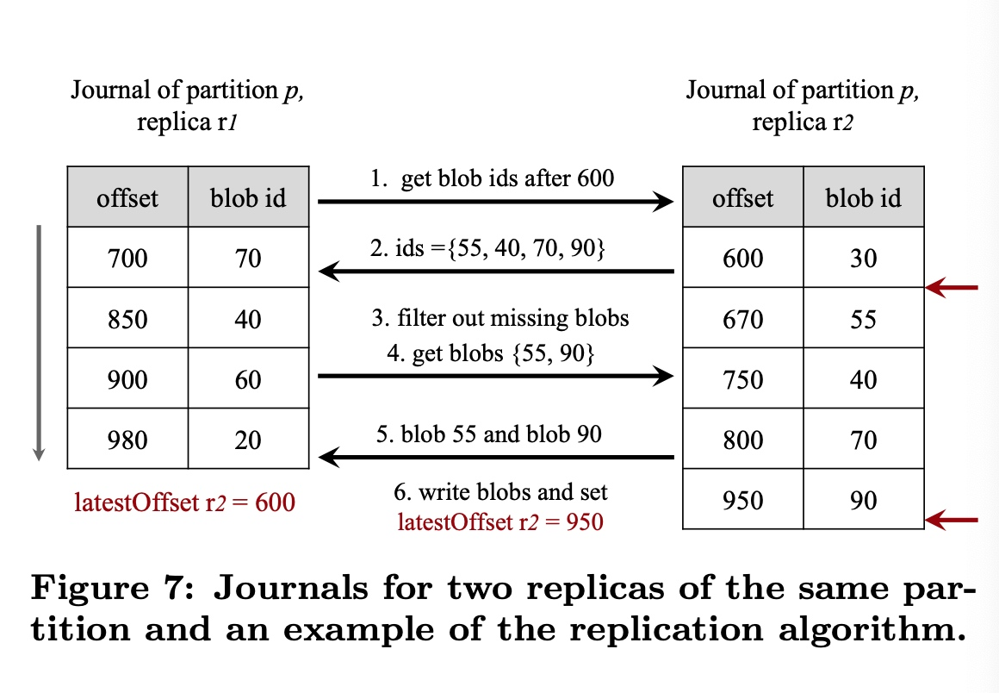
为了快速的找出最近写入的 blob，复制算法为每个 replica 维护了一个额外的数据结构，称之为 journal。journal 是一个内存的缓存，其中按照 offset 顺序维护了最近的 blob。Figure 7 展示了两个 replica($r_1$, $r_2$) 以及 $r_1$ 从最近偏移量 (latestOffset) 600 处两阶段同步 $r_2$ 的过程。第一阶段，$r_1$ 请求所有在偏移量 600 之后、最近添加到 $r_2$ 的 blob id，$r_2$ 使用 journal 返回 blob id 的列表 B={55, 40, 70, 90}，然后 $r_1$ 过滤出本地缺少的 blob id{55, 90}。第二阶段，$r_1$ 接收缺少的blob，并追加到 replica 末尾，同时更新 journal，索引和最近偏移量 (latestOffset)。
为了改善系统的效率和扩展能力，复制算法使用了如下的优化：
- 数据中心内部和跨数据中心的同步使用不同的线程池和同步周期
- 将两个 Datanodes 之间相同 partition replica 的请求进行聚合，对跨数据中心传输的 blobs 也进行批量传输。
- 为了更快的追上同步，提高落后 replica 的优先级（通过为落后的 replica 使用专门的线程）。
6. 实验结果
我们构建了三个实验环境，小集群（详见 6.1 章节），生产集群（详见 6.2 章节）和仿真集群（详见 6.3 章节）。
6.1 吞吐和延时
在这个章节我们测量系统的延时与吞吐。使用了一个微型的 benchmark 工具，对系统在只读，只写，和可读可写的负载下进行压测(6.1.1章)。
6.1.1 微型-benchmark
我们首先测量了吞吐峰值，我们设计了一个微型 benchmark 工具，工具线性的增加系统负载（通过添加更多 client 的方式）直到系统达到饱和，不能处理更多请求。每个 client 每次发送一个请求，并在上个请求刚返回后就发送下一个请求。
benchmark 有三种模式：写、读、读写。在写模式下，任意个 client put 随机大小的字节数组 blob。在读模式下，首先在写周期内(write-period)进行饱和的写（以最快速率写），然后从写入的 blob 随机选择进行读4。在大多数实验中，我们设置的写周期足够长，可以让大多数的读请求(>80%)都是由硬盘而不是内存进行处理的。读写模式与读相似，只是在写周期之后读和写的请求各占50%。
因为延时和吞吐与 blob 大小非常相关，每次运行都会使用总大小固定的 blob，但会改变 blob 的大小 (we use fixed-size blobs in each run, but vary the blob size)。
6.1.2 实验设置
部署单节点 (Datanode) 的 Ambry。这个 Datanode 运行在一个 24 核 CPU ，64GB 内存，14 块 1TB HDD 和一个全双工 1Gb/s 的以太网卡的服务器上。Datanode 服务内部使用 4GB 内存，剩余的内存作为系统缓存。在每个磁盘上创建 8 个 100GB 单备份的 partition，一共 122 个。使用14 个磁盘、 1Gb/s 的网卡看起来有些多余，但是对于小文件来说，磁盘 seek 是延时主要影响因素。因为大部分blob是小的(< 50 KB)，我们需要使用多个磁盘进行并行操作（更多详情见 6.1.4 章节）。值得注意的是我们将 Ambry 设计为性价比高的系统，所以使用了廉价的机械盘。
Client 从多台与 Datanode 位于同一个数据中心的机器上发送请求，这些 client 充当 Frontends 直接向 Datanode 发送请求，上面讨论的微型 benchmark 工具会使用大小不同的 blob {25KB, 50KB, 100KB, 250KB, 500KB, 1MB, 5MB}，没有继续使用超过 5MB 的 blob 是因为大于 5MB 的 blob 会被切分。
6.1.3 client数量的影响
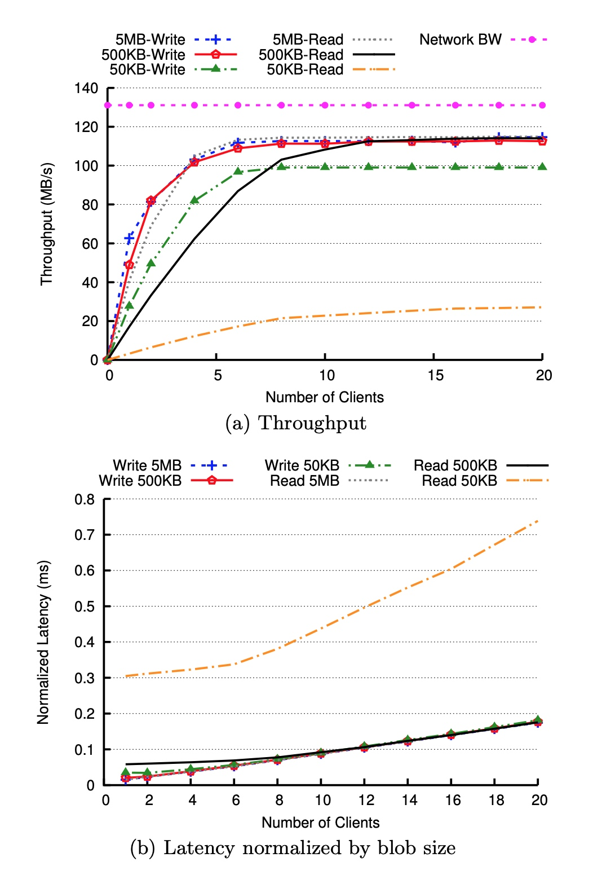
微型 benchmark 工具使用大小变化的 blob，同时线性增加 client 数量。对于读模式，第一个写周期我们设置为写 6 倍于内存大小的数据。Figure 8a 展示了以 MB/s 表示的系统提供的吞吐。到饱和点之前，吞吐会随着 client 的新增按比例增长。吞吐饱和发生在网络带宽的 75%~85%。唯一的例外就是读取小的blob，主要是因为频繁的磁盘 seek （详见 6.1.4 章节讨论）。很快就会到达饱和状态（通常 client <= 6）是因为在 benchmark 时 client 会尽可能快的发送请求。
Figure 8b 展示了经过 blob 大小标准化后的延时（即延时/blob大小的平均值)。在抵达饱和点前延时几乎是一个常数，超过饱和点后变为线性增长。线性增长的原因是因为，系统不能处理额外的请求了。增长的线性表明系统在请求的处理外没有额外的消耗。
6.1.4 blob 大小的影响
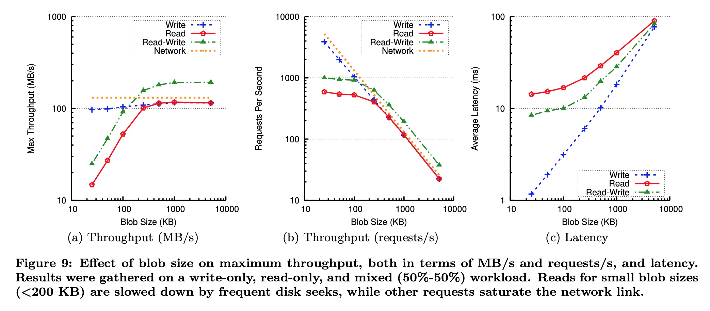
在 Figure 9a 和 9b 中我们分析了在不同 blob 大小和工作负载下最大的吞吐（使用 20 个 clients）。对于大的对象（>200 KB），不同 blob 大小的最大吞吐（以 MB/s 为单位）基本保持恒定，并且接近网络最大带宽。类似的，以每秒请求数量表示的吞吐也成比例的增加。
然而，对于读和读写模式来说，小文件的读吞吐呈线性下降。下降是因为微型 benchmark 工具随机读取 blob，导致了频繁的磁盘 seek。磁盘 seek 的影响在读取小 blob 时被放大了。为了通过使用Bonnie++ 1 （IO benchmark 工具，用来测量磁盘性能）进一步分析磁盘，我们确定磁盘 seek 是操作小 blobs 延时的主要原因。例如当读取一个50KB 的 blob，超过 94% 的延时是由硬盘 seek 产生的（6.49ms 用于磁盘 seek，0.4ms 用于读取数据）。
读和写操作大部分只是分别利用了 Datanode 的流入和流出链路。但是读写模式下同时利用到两个链路，因此会有更大的吞吐。因此在全双工模式的网络设施上，读写模式下可以获得接近之前两倍的吞吐（在 2Gb/s 带宽下总共约 1.7Gb/s 的吞吐）。对于小文件来说，读写吞吐大致为只读吞吐的 2 倍，因为读写各占 50% 的工作，而读是主要的限制因素。
Figure 9c 展示了延时随 blob 大小变化的趋势。这些结果是使用 2 个 clients 到达饱和点之前的数据。与吞吐量相似，除小 blob 外，延时随着 blob 大小线性增长。读的延时更高，因为大多数的读都会引发磁盘 seek，而写请求是批量写入的。读写延时位于读和写延时之间，因为读写是由读和写混合而成的。
6.1.5 延时的变化
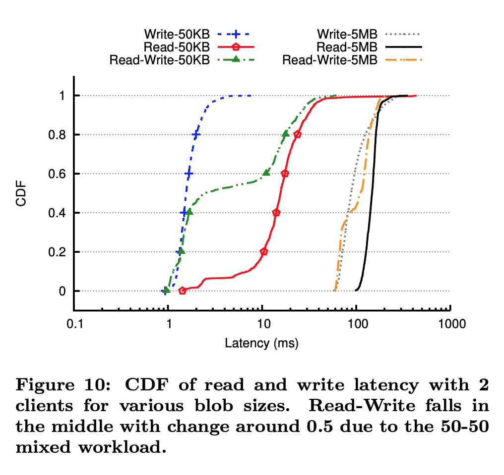
对于请求延时来说，尾部和变化都很重要。Figure 10 展示了 2 个 client 的读、写、读写模式的累积分布图。这个累积分布图中的读和写都非常接近一个垂直线，并且带有一个短的尾部，并且大多数值都接近中位数。（50KB 大小的 blob）读模式下 CDF 为 0.15 附近的下降，主要是因为小文件中的一小部分能够直接由 Linux cache 提供服务，cache 会比硬盘快几个数量级（详见 6.1.6 章节）。读写模式累积分布图是由读和写混合组成，在 0.5 处发生改变。主要是由于读和写各占 50% 的工作模式造成的。
6.1.6 Linux Cache 的影响
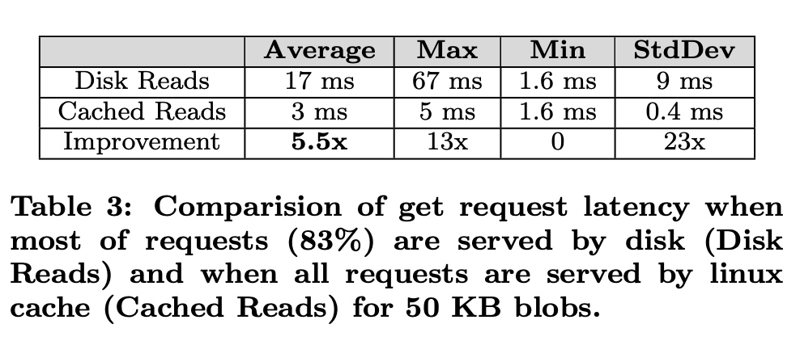
当以 50KB 大小的 blob 和 2 个 client 的配置下运行微型 benchmark 工具时，提供两种配置。1) 在读之前写 6 倍于内存大小的数据，所以大多数的请求 (83%) 是由硬盘提供服务（读硬盘）。2) 写数据大小等于内存的数据，保证所有数据都在内存当中（读缓存）。表 3 比较了这两种模式。
缓存读的性能，超过 2100 请求/s （104MB/s 接近 79% 的网络带宽）与最大的写带宽相匹配（详见 6.1.3 章节），与之相对从磁盘读的速度只有 540 请求/s。我们也测量了延时的平均、最大、最小和标准差，如表 3 所示。在两种情形里，最小延时相等，然而从缓存读能够提高平均延时和最大延时，分别提升了 5.5 倍和 13 倍。这说明利用 linux cache 是很有效的（详见 4.3.2 章节）。
6.2 跨数据中心优化
我们使用 LinkedIn 分布在全美的 3 个数据中心{DC1, DC2, DC3}，分析了我们的复制算法。本章所有的实验都来自于生产环境。
6.2.1 复制落后
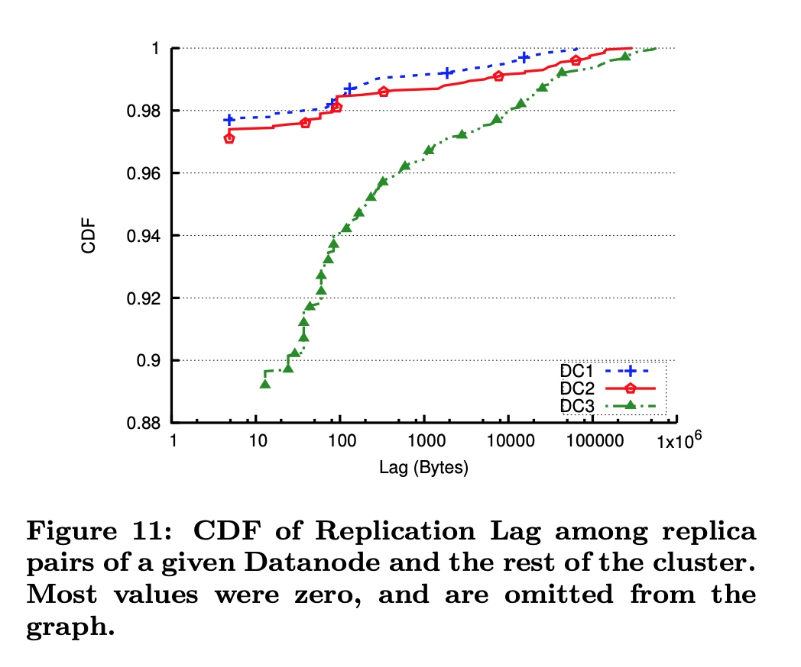
我们定义一对 replica($r_1$, $r_2$) 之间的复制落后(replication lag) 为 $r_2$ 使用的最高的 offset 与 $r_1$ 上次同步 $r_2$ 的 offset 之间的不同。需要注意不是所有的落后的数据都要复制到 $r_1$，因为它也可以从别的 replica 获取到缺失的 blob。
我们测量了给定 Datanode 上所有的 replicas 与集群中其他 replica 之间的复制落后，发现超过 85% 的值为0。Figure 11 展示了不同数据中心落后值不为 0 的累积分布。对于 100GB 的 partition（所有的数据中心）95% 的落后小于 1KB，DC3 有更多的落后，因为他距离其他的数据中心相对远。
6.2.2 复制带宽
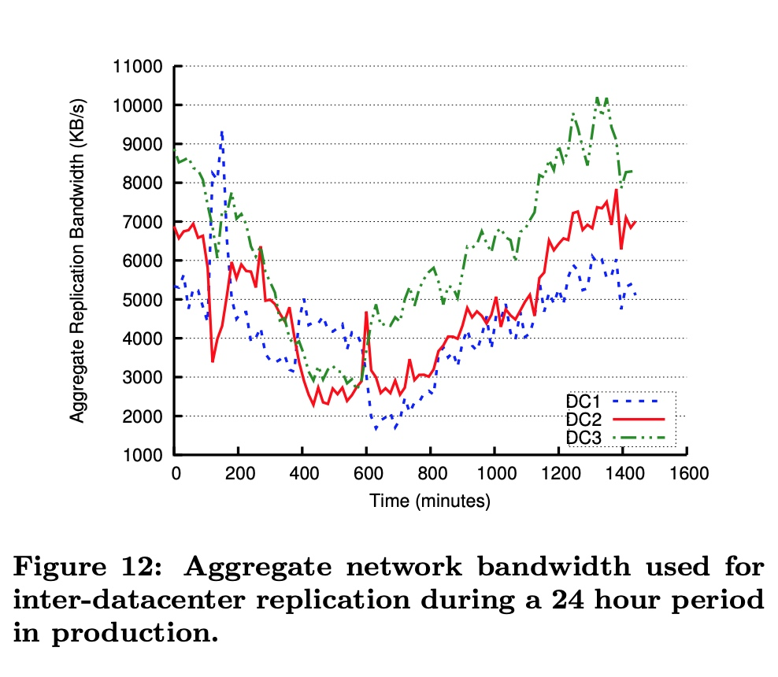
Ambry 依赖后台复制将数据写到其他数据中心。我们测量了 24 小时内用于数据中心间复制的总网络带宽，如 Figure 12 所示。总网络带宽较小 (< 10MB/s)，所有的数据中心都类似，与请求比率相关，而且每天的带宽使用模式都类似。带宽占用小，是因为相同的 replica 我们采用了批量复制，而且读流量天然占比重大。
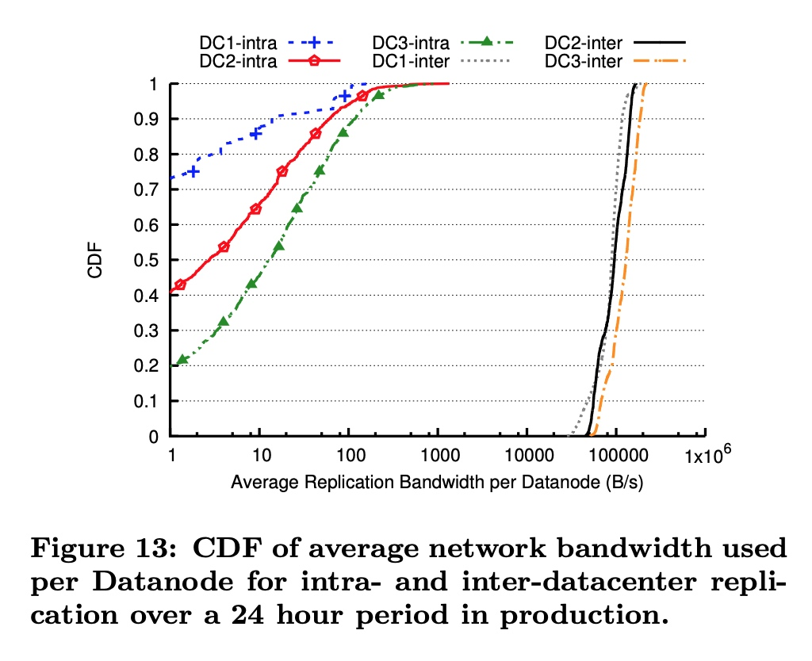
Figure 13 展示了每个 Datanode 平均复制带宽的累积分布，包括数据中心内和数据中心之间的复制。数据中心内的带宽很小（95%分位 < 200B/s )，与之相对的数据中心间的带宽 95%分位在150KB/s（大 1000 倍）。数据中心之间带宽高的原因主要是因为异步写。然而数据中心之间的带宽仍然很小（仅占 1Gb/s 链路的约 0.2%）。三个数据中心之间微小的不同是因为它们接收到的请求不同。
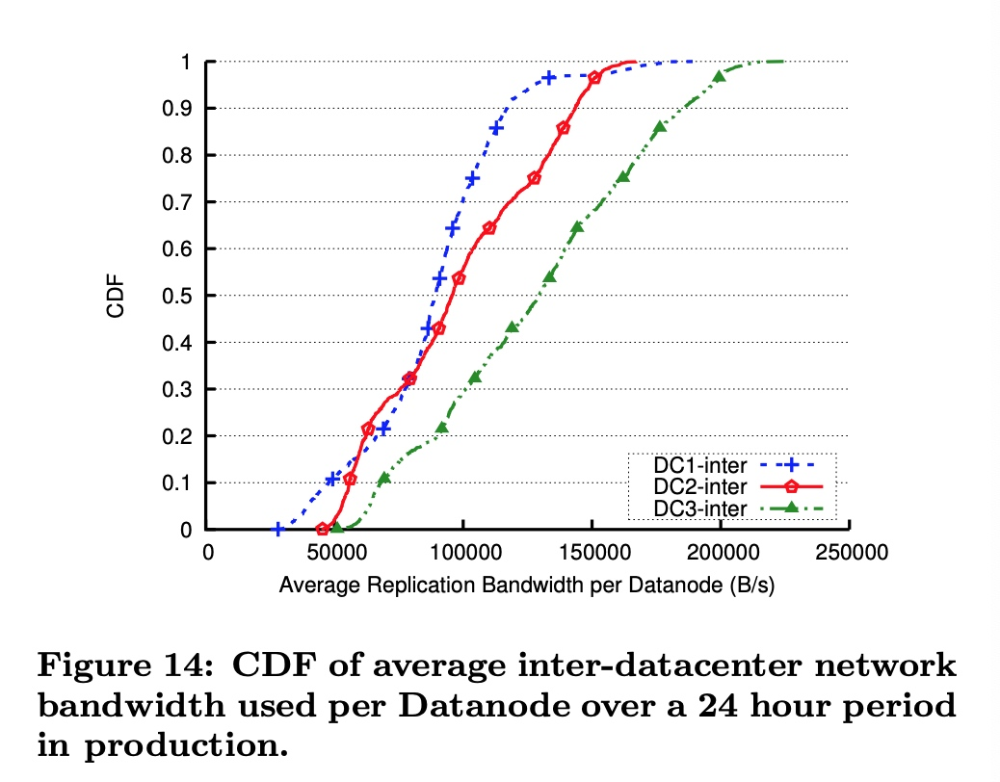
Figure 14 展示了放大后只包含数据中心之间带宽累积分布的图片。图中有一个短的尾部，在 95% 和 5% 分位有大概 3 倍的差异。这个尾部产生的原因是 Ambry 中负载均衡的设计。数据中心内复制有更长得尾部，也有很多为零的值（图中忽略掉了）。因此复制可能几乎不消耗带宽（数据中心内），或者消耗几乎均衡的带宽（数据中心间）。
6.2.3 复制延时
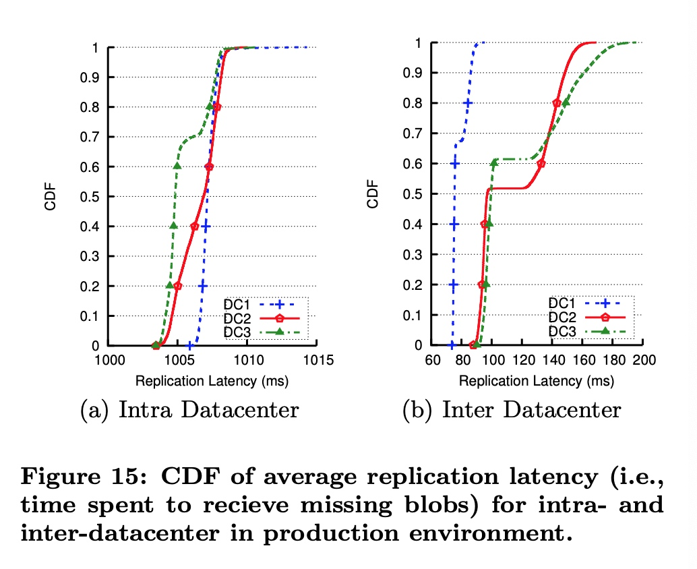
我们定义复制延时（replication latency） 为使用一次复制协议所花费的时间， $T{missing_blobs_received} - T{replication_initiated}$ 即接收到缺失 blob 的时间减去发起同步的时间。Figure 15 展示了我们生产环境中数据中心间与数据中心内平均复制延时的累积分布图。
数据中心间复制延时的中位数小于 150ms，有非常短的尾部。尽管这个延时可能变高，但是代理请求的比例仍然保持接近于 0 (< 0.001%)。这是因为用户通常都会从他们最近写的数据数据中心读取数据。因此复制对用户体验的影响非常小。
出人意料的是，数据中心内的复制的延时相当高（比数据中心间高 6 倍）同时带有一点变化。出现这种模式的原因是，为了防止错误的 blob 冲突检测，人为添加了 1 秒的延时。如果一个 blob 复制比 Datanode 接收到的请求还快，那么当 Datanode 接收到这个 put 请求时，发现本地已经存在这个 blob（在较宽松 policy 时可能出现），会认为这个 put 操作引起 blob 冲突，并将请求返回失败。人为添加的延时就是为了防止数据中心内复制时发生这个问题。这个相对小的延时并没有影响到可用性或者之久性。因为数据中心内复制只用于修复几乎不会出现的失效的或者慢的 Datanode。
6.3 负载均衡
因为集群扩容发生的不是很频繁（最多几个月发生一次）。我们实现了一个模拟器用来展示 Ambry 经过长时间（数年）运行后和大规模集群（数百个 Datanode）的行为。我们使用的负载是基于生产环境的。这章所有的结果都是模拟器收集的。
6.3.1 模拟器设计
模拟器的设计与 Ambry 的架构类似，使用相同的路径处理请求。然而没有真实的物理硬盘。处理请求时，只有元数据（blob 的 id 和大小）会被存储或召回，同时请求的影响也会得以体现（比如占用磁盘空间的增长）。
Workload：我们使用非常接近 LinkedIn 真实流量的合成 workload。这个 workload 记录了每种类型 (read, write, delete) 请求的比例，blob 大小分布和 blob 访问模式（基于年龄）。
集群扩展：模拟器起初拥有一组同一个数据中心的 Datanodes, 磁盘和 partition 。随着时间的流逝，当 partition 接近容量上限时，一批新的partition 使用 2.2 章的策略被添加。如果 partition 不能够被添加（比如磁盘没有未分配空间了），一批 Datanodes 将会被添加。
6.3.2 实验设置
模拟器运行在单个数据中心，拥有十个 Frontend 节点。这个实验起初有 15 个 Datanodes，每个都带有 10 个 4TB 的硬盘和 1200 个 100GB 大小的 partition，每个 partition 有三副本。当到达 partition 和 Datanodes 新增时间点时，600 个 partition 和 15 个 Datanodes 会分别被添加。模拟器运行了超过 400 周（将近 8 年），并且拥有多达 240 个 Datanodes。测量请求速率、磁盘使用率和数据迁移时，模拟器运行了两种，一种是带有负载匀衡的，另外一种不带负载均衡，其他配置均相同。
6.3.3 请求速率
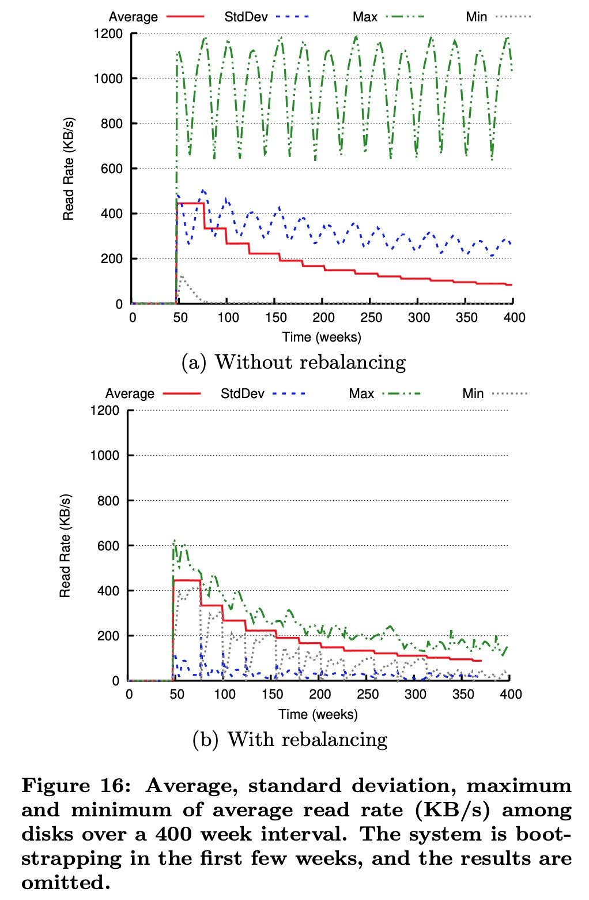
我们测量了每个磁盘的各个时间点的读取速率 (KB/s)，Figure 16 展示了带有负载再均衡 (rebalancing) 和没有负载再均衡系统中磁盘读取速率的平均值、标准差、最大和最小值。写入速率的结果相似，因为空间原因没有展示。
平均值，如预期中的，是一个呈阶梯下降的函数。下降的点是因为新的 Datanodes 添加到了集群中。在没有负载再均衡 (rebalancing) 时大部分磁盘都是老的、只读的、几乎没有流量，而新添加的磁盘则收到了绝大部分的请求。因此最小值接近 0。同时最大值和标准差也非常大有重要的意义（最大值比平均值大 3-7 倍，标准差比平均值大 1-2 倍）。当引入再负载均衡机制后，最小值和最大值接近平均值，标准差下降到接近为 0。由此我们推断 Ambry 的负载均衡是有效的。
6.3.4 磁盘使用情况
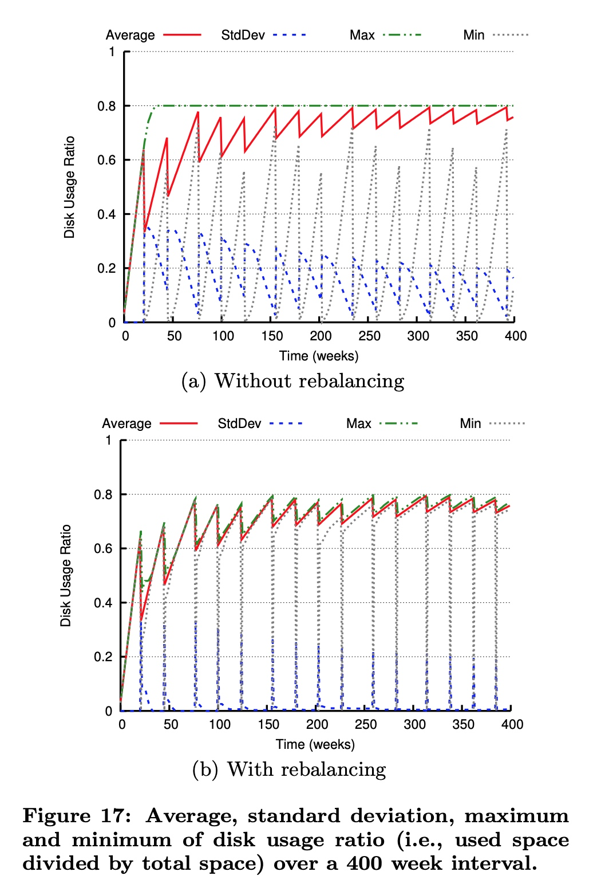
我们分析了带负载再均衡和不带负载再均衡的磁盘使用比例，即使用的空间除以磁盘的总空间，如 Figure 17 所示，因为一些磁盘已经满了，没有负载再均衡的最大值一直处于容量上限。然而当新的 Datanodes 添加进来时最小值接近于 0。带有负载再均衡的最小值和最大值接近平均值，最小值会临时下降，直到负载均衡完成。此外标准差下降明显，接近于 0，偶尔跳起是因为 DataNodes 被添加到集群中。
6.3.5 这段时间的评估
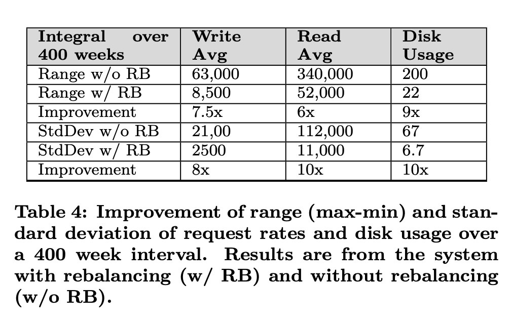
通过测量 400 周内的请求速率、磁盘使用的区间（最大值减最小值）和标准差，我们评估了过去这段时间的提升。如表 4 所示，负载再均衡有显著的效果，改善 6-9 倍区间和 8-10 倍标准差。
6.3.6 数据迁移
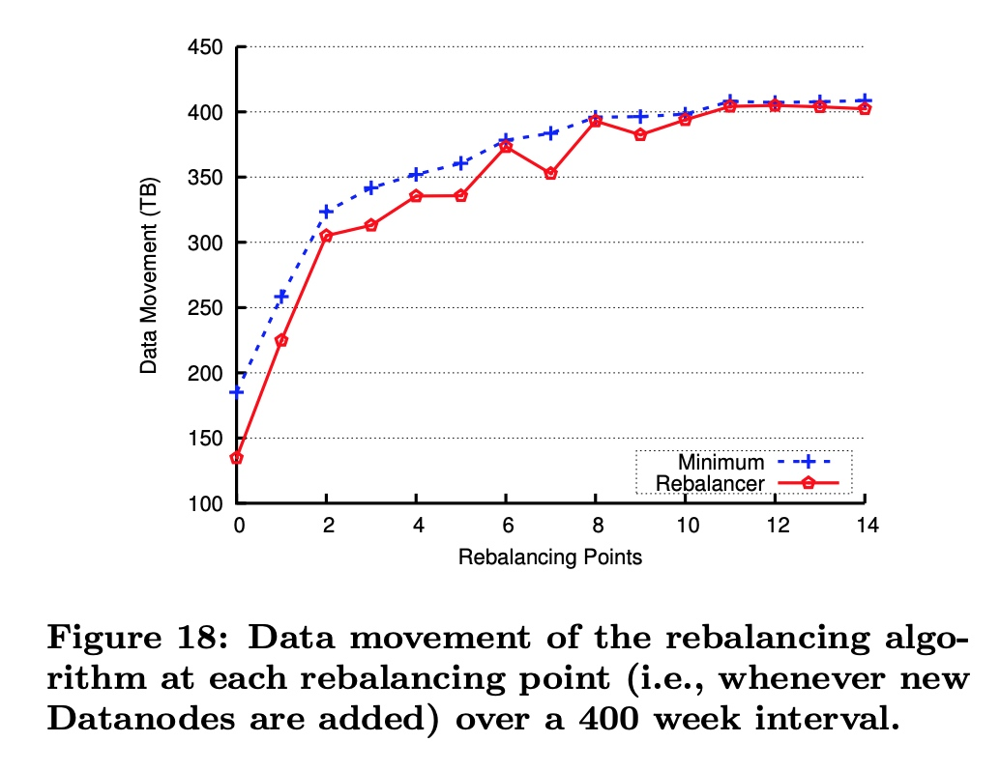
当负载再均衡被触发时，我们测量了要达到理想状态所需迁移的最小数据量和真正迁移的数据量 最小迁移数据量是通过将所有在理想状态之上的磁盘的当前使用率与理想磁盘使用率的差别相加计算出来的。由于数据是以 partition 的粒度进行迁移的，计算得到的这个最小值是可达到的下限。如 Figure 18 所示，负载再均衡的数据迁移量非常接近最小数据量，而且经常比最小值低。这是由于负载再均衡算法牺牲完美均衡（理想状态）换来了更少的数据迁移量。需要特别注意的是，负载再均衡算法通常不会向将要脱离理想状态的磁盘添加（或删除）partition，即使这只会导致轻微的不均衡。
7 相关工作
文件系统：Ambry 的设计受到了日志文件系统的启发 (LFS) [21, 23]。这些系统利用类日志数据结构的顺序写优化了写吞吐，使用系统缓存优化读吞吐。尽管这些这些单台机器的系统需要面对碎片化和清理开销的问题，但是核心的思想对我们是非常有意义的，尤其当 blob 是不可变对象时。主要的区别在于我们环境中数据倾斜的访问模式和 Ambry 所引入的额外优化，像使用分片索引和布隆过滤。
已经有处理元数据和小文件的高效方法了。包括减少磁盘 seek [9]，联合使用日志结构系统（用于 meta 和小数据）和快速文件系统（大文件）[30]，使用索引块存储数据的起始段 [17]。我们的系统解决这些问题的方式是，通过使用内存的数据分段索引和布隆过滤以及批量写技术。
分布式文件系统：由于数据量极大和数据共享的需求，许多分布式文件系统，像 NFS [22], AFS [16]，以及一些更可靠的能够处理故障的系统，像GFS, HDFS 和 Ceph [10, 24, 28] 已经出现了。然而这些系统元数据开销太大，此外对于简单的 blob 存储，一些额外属性（目录、权限等）也是不需要的。许多（例如HDFS，GFS，NFS）系统需要一个单独的元数据服务器，更加放大了元数据开销。这个元数据服务器给每个请求都添加了额外的中转站，因而可能造成单点故障，并且限制了扩展性。。最近的研究中，这个问题已经被分布式元数据 [28] 或者缓存 [20] 解决。尽管这些系统减少了元数据的访问，但是每个小对象仍然有很大的元数据（通常存储于硬盘），降低了系统的吞吐。
分布式数据存储：许多 kv 存储，像 [2, 5, 8, 14]，已经被设计为每秒可以处理大量请求。然而这些系统不能高效的处理大对象（数十 MB 到 GB），并且为了维护异质性添加了额外的开销。也有一些系统 [2, 8,14]使用哈希将数据分布到机器上，当添加/删除节点时会发生大量的数据迁移。
PNUTS [6] 和 Spanner [7] 是可扩展跨地区的分布式系统，PNUTS 也保持了负载均衡。然而这些系统提供的功能和数据保障，仍然比简单不可变的 blob 存储所需要的更多。
Blob 存储：与 Ambry 中的 partition 相似的概念已经在其他系统中被使用，Haystack 使用了 logic volumes 3，Twitter 的 blob store 使用了 virtual buckets [27]，Petal file system 引入了虚拟磁盘 [15]。Ambry 从这些系统中引入了一些优化，例如 Haystack 中的添加内部缓存，然而，不管是 Haystack 还是 Twitter 的 blob store 都没有处理负载不均衡的问题。此外 Haystack 使用同步写副本影响了跨机房的性能。
Facebook 已经设计了 f4 [18]，对老数据（已经变为冷数据）使用纠删码来减少副本因子的 blob 存储。尽管这些新思想可以引入 Ambry，但是我们主要的关注点是既需要新数据也需要老数据。Oracle’s Database [19] 和 Windows Azure Storage (WAS) 4 也能存储可变 blob，并且 WAS 甚至对跨机房环境进行了优化。然而他们都提供了许多额外的功能，比如除 blob 外的数据类型，强一致性保障，以及对 blob 的修改，这是我们所不需要的。
8. 结论
这篇论文描述了 Ambry，一个专门用于存储大的不可变媒体对象（称为 blob）的分布式存储系统。我们将 Ambry 设计为一个可以在跨机房环境下提供低延时和高吞吐的系统。通过使用分布式设计、再均衡机制、分块和逻辑 blob 组（译注：partition），我们提供了负载均衡和水平扩展能力，来应对 LinkedIn 的迅速增长。
我们未来的一部分工作是改变热数据的副本机制，通过数据热度来自适应地改变它的副本因子，使用纠删码机制来存储冷数据。我们也打算调查压缩机制，权衡开销和收益。此外我们正在改进 Ambry 的安全性，特别是对于跨数据中心的流量。
9 致谢
略
10 参考
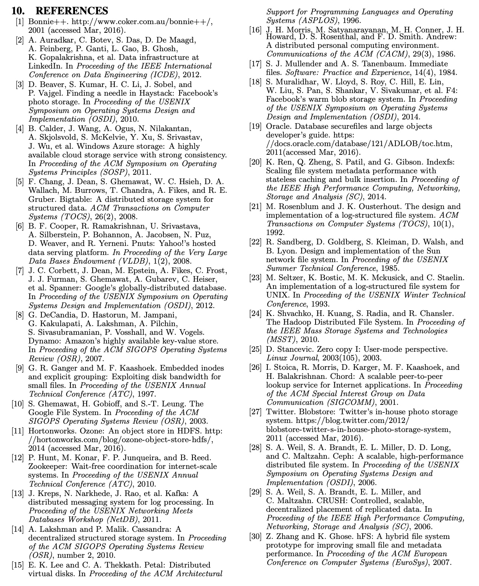